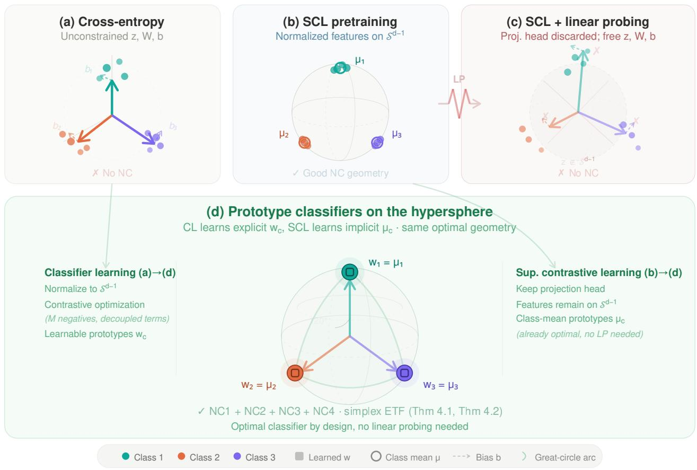
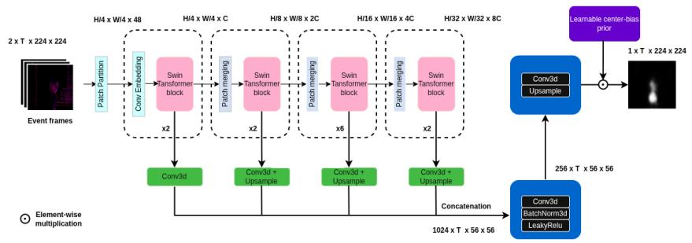

P1
P1
TextTeacher: What Can Language Teach About Images?
今天最值得先读：它不是完整 CLIP 式预训练，而是把语言语义变成低成本的视觉表征塑形目标。
方法：frozen text encoder semantic anchors for image representation training
当前 MVP 收录 12 篇样例；正式版会读取跨天去重 JSON 和每日筛选结果。
P1
今天最值得先读：它不是完整 CLIP 式预训练，而是把语言语义变成低成本的视觉表征塑形目标。
方法：frozen text encoder semantic anchors for image representation training
 P1
P1
适合关注多模态预训练数据效率的人精读：它把合成图文对放进分布匹配和对齐保持问题里。
方法：geometric multimodal distribution matching for image-text dataset distillation
 P2
P2
它把视频自监督和 Video-LLM 后训练接起来，值得和 V-JEPA、视频掩码建模放在一起看。
方法：temporal-aware questioner reward and temporal-grounded solver reward
 P2
P2
这是一个诊断工具型论文：以后看 latent visual token 方法时，应该要求内容替换消融。
方法：token replacement test for continuous and discrete visual thought tokens

P3偏理论和监督表征，但对理解 linear probe、原型、均匀性和表征几何有参考价值。
方法：prototype contrast with NTCE / NONL objectives on the hypersphere

扫读模态较专，适合作为自监督 backbone 迁移到异构视觉模态的扫读案例。
方法：self-supervised event-based Swin Transformer plus lightweight saliency decoder
 P1
P1
视觉自监督和视觉语言预训练之间的边界被进一步打薄：它仍然预测 feature，不直接重建像素，也不完全依赖对比学习。
方法：caption-conditioned masked feature prediction with sparse cross-attention text conditioner
 P1
P1
它把视频 SSL 的目标从重建下一帧推向重建“低层没有解释完的部分”。
方法：hierarchical residual world model for self-supervised visual foresight
 P1
P1
用伪位姿把跨帧 token 固定到共享空间，是视频 VFM/MLLM 很值得跟的结构化监督。
方法：learnable camera tokens + pose regression head for frame-level grounding
 P2
P2
这类诊断比单纯刷视频 QA 更有价值，因为它定位了视觉表征到语言读出的断点。
方法：feature-delta motion vector objective at projector level
 P2
P2
这篇不是 JEPA，而是 VLM 视觉 token grounding：冻结几何编码器的证据被分配给多层视觉 token。
方法：multi-level geometry bank + residual grounding before LLM reasoning
 P1
P1
这是本 MVP 的 MinerU 图文样例页：Fig.1 解释动机，Fig.2 解释共享/私有 latent 生成过程。
方法：self-modal reconstruction + pairwise contrastive latent alignment